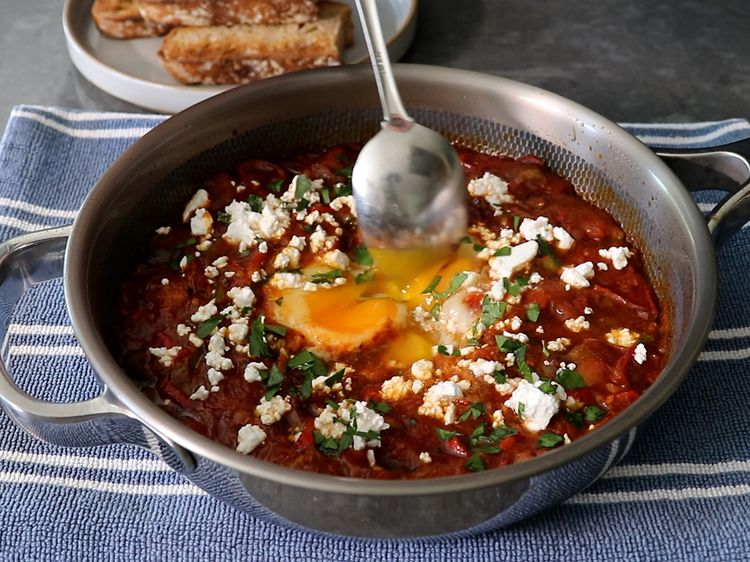

Home
One-Egg Shakshuka

Description
This single-serve, one-egg shakshuka is a world-class breakfast that makes the most of fresh garden tomatoes and peppers. Do not let the ingredient list fool you—it is mostly seasonings, and this saucy, flavor-packed breakfast comes together quickly.
Ingredients
- 1 tablespoon olive oil
- 1/4 cup sliced green onion
- 1/4 teaspoon kosher salt
- 1/2 teaspoon ground cumin
- 1/2 teaspoon smoked paprika
- 1/8 teaspoon ground turmeric
- 1/8 teaspoon dried oregano
- 1/8 teaspoon freshly ground black pepper
- 1 pinch cayenne pepper
- 1/2 cup sliced hot peppers and/or sweet peppers
- 1 cup chopped fresh tomatoes
- 1 large egg
- 2 tablespoons crumbled feta cheese
- 2 tablespoons chopped fresh parsley or cilantro
- toasted sliced bread to serve alongside
Steps
- Add olive oil to a skillet over medium-high heat and add green onions. When green onions start to sizzle, add salt, cumin, paprika, turmeric, oregano, black pepper, and cayenne. Cook, stirring for about a minute. Add peppers and tomatoes and stir everything to combine.
- Continue cooking, stirring occasionally, until tomatoes soften and get saucy, and peppers become as tender as you like, 3 to 8 minutes. If the sauce is too thick, just add a splash of water. When you’re happy with the sauce, use a spoon to make a well in the center, and transfer the egg into the well. Carefully use the tip of the spoon to spread the white out a little, away from the yolk.
- Cover and cook until egg is as done as you like, 1 to 2 minutes. The egg will continue to cook in the hot sauce as you serve, so it is generally a good idea to undercook slightly; it will finish cooking when you break the yolk and stir it into the sauce.
- Garnish the top with crumbled feta, and freshly chopped parsley or cilantro. Serve with toast to scoop up the sauce and egg.